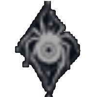
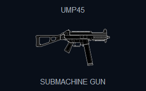
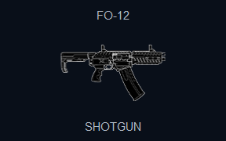

LAASINEE
SIDE
DEFENDER
SQUAD

GHOSTEYES
SPECIALTY
SUPPORT, INTEL
HEALTH
SPEED
LOADOUT
PRIMARY WEAPON
SECONDARY WEAPON
GADGET
UNIQUE ABILITY


UNIQUE ABILITY AND PLAYSTYLE
Unique Ability: Spiderling Mine Transporter Laasinee deploys a spider-shaped drone that can be controlled like a regular drone. It can move on any surface, including floors, walls, ceilings, and furniture. However, it cannot jump and lacks a speed boost function like standard drones. In addition to serving as a camera, the Spiderling can pick up and transport small, soft-mounted gadgets from both defenders and attackers. Supported Gadgets - Defender Gadgets: Smoke's Remote Gas Grenade, Valkyrie’s Black Eye, Echo’s Yokai, Lesion’s GU, Ela’s Grzmot Mine, Alibi’s Prisma, Kaid’s Electroclaw, Mozzie’s Pest, Wamai’s Mag-NET, Thorn’s Razorbloom, Azami’s Kiba Barrier (only if the kunai bounces off a player or gadget and lands on the ground without activating), Fenrir’s F-Natt Dread Mine, Nitro Cell, Proximity Alarm - Attacker Gadgets: Thatcher’s EMP Grenade, A single grenade from Fuze's Cluster Charge, Twitch’s Shock Drone, A single X-Kairos pellet from Hibana, Ying’s Candela (only if thrown), Nomad’s Airjab, Ace’s S.E.L.M.A. (only if it lands on a non-destructible surface and does not activate), Sens’ R.O.U. Projector Disc, Brava’s Kludge Drone, Frag Grenade, Stun Grenade, Smoke Grenade, Regular Drones The Spiderling cannot pick up: - Large gadgets (e.g., Frost's Welcome Mat, Jäger's ADS) - Hard-mounted gadgets (e.g., Kapkan’s EDD, Rauora's D.O.M. Panel) - Impact-based gadgets (e.g., Impact Grenades, Zofia’s Grenades) The Spiderling cannot activate or trigger the explosion of any gadget it picks up. - Proximity-based gadgets (e.g., Grzmot Mine, Airjab) will still trigger when an enemy enters their range. - Player-activated gadgets (e.g., Smoke Canister, Nitro Cell) must still be activated by the player who deployed them. - Timed gadgets (e.g., EMP Grenade, Frag Grenade) can be picked up if done quickly, but their timer will not stop or reset. The Spiderling can carry only one item at a time and can drop it at any moment. Destruction: - The Spiderling can be destroyed by gunfire, melee, explosives, and enemy gadgets. - If the gadget being carried explodes, it destroys the Spiderling. - It is not destroyed by non-damaging explosions (e.g., Grzmot, Airjab). - The Spiderling and the carried gadget have separate hitboxes: - If the gadget is destroyed (e.g., shot), the Spiderling remains intact. - If the Spiderling is destroyed, the gadget is dropped on the ground. Interactions: - Detected by IQ’s Electronics Detector - Can be shot by Twitch’s Shock Drone - Affected by EMP - Dokkaebi can hack into its camera feed - Nøkk can remain undetected by it - Can fit under door barricades and Rauora's D.O.M. Panels - Loses signal outside of buildings - Can be frozen by Tubarão's Zoto Canister - Can be jammed by hacked by Brava Mute’s Signal Disruptor - Cannot see through hacked by Brava Observation Blockers - Can be hacked by Brava’s Kludge Drone and if so: - Can be hacked back by Mozzie’s Pest - Can be jammed by Mute’s Signal Disruptor - Cannot see through Observation Blockers - Vigil can remain undetected by it - Affected by Bulletproof Camera EMP - Detected by Solis’ Spec-IO Electro-Sensor - Destroyed by contact with electrified surfaces Laasinee starts with 1 Spiderling and gains another every 45 seconds.
BIOGRAPHY
 LAASINEE
LAASINEE
 DEFENDER
DEFENDER